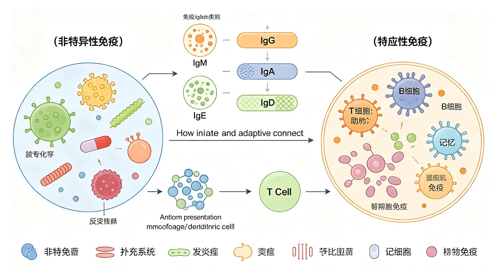
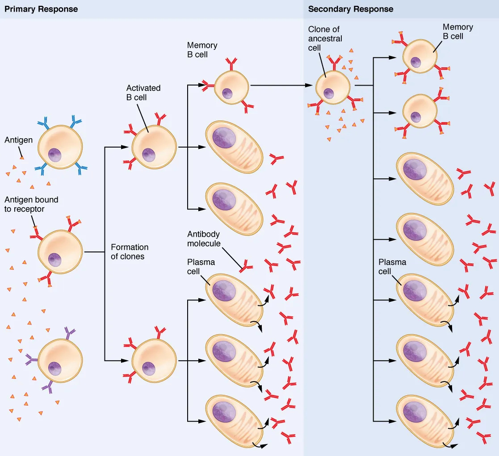
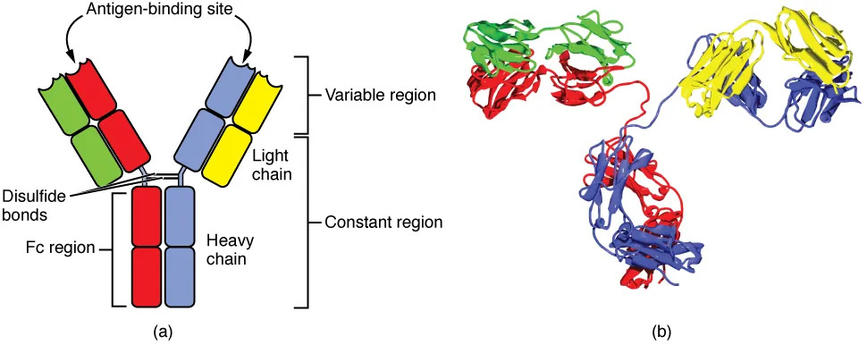
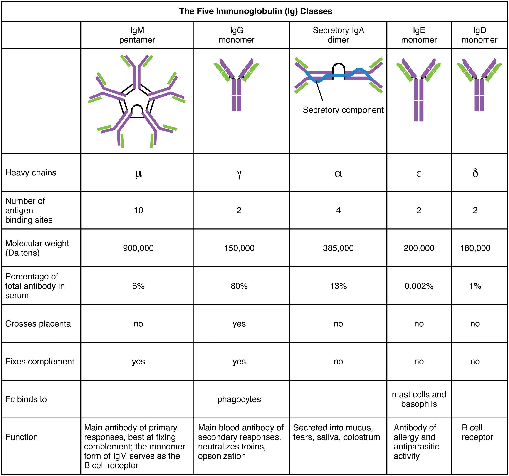

微生物感染与致病性
一、感染的概念与类型
感染（infection）是指病原微生物侵入宿主体内，并在宿主体内生长繁殖、与宿主免疫系统相互作用的过程。感染的结果取决于病原体的毒力、侵入数量、侵入门户与宿主的免疫防御能力三方面因素的综合较量。感染不等于疾病——感染后是否发病取决于上述平衡的走向。
根据宿主表现出的临床症状及病原体在体内的存在状态，感染可分为以下四种类型：
- 显性感染（apparent infection）：病原体侵入后大量繁殖并引起明显临床症状。又分急性感染（发病急、病程短，如流感）和慢性感染（病程长、持续排出病原体，如结核）。
- 隐性感染（inapparent infection / subclinical infection）：病原体侵入后不引起明显症状，但宿主已产生特异性免疫。隐性感染在传染病流行中意义重大——构成"冰山现象"，即显性感染仅是露出水面的少数，大量隐性感染者不易被发现却具有传染性。
- 潜伏感染（latent infection）：病原体侵入后长期潜伏于体内某些部位，与宿主处于相对平衡状态；当机体免疫力下降时，病原体重新活跃而发病。典型例子：结核分枝杆菌（潜伏于肺尖，免疫力低下时活动→继发性结核）、水痘-带状疱疹病毒（潜伏于脊髓后根神经节，老年/免疫力下降时沿神经分布发作→带状疱疹）、单纯疱疹病毒（潜伏于三叉神经节）。
- 带菌者（carrier）：体内带有病原体并能排出体外、但自身不表现临床症状的宿主。带菌者是传染病流行中最重要的传染源之一，因其"健康"外观而难以被发现。分健康带菌者（从未发病，如伤寒"伤寒玛丽"）、恢复期带菌者（病愈后仍排菌）、潜伏期带菌者。
二、细菌的致病性
致病性（pathogenicity）是指病原微生物引起宿主疾病的能力，是种的属性。而毒力（virulence）是致病性的量化指标，指同一菌种中不同菌株致病能力的强弱。细菌的致病性取决于两大要素：侵袭力与毒素。
（一）侵袭力（invasiveness）：细菌侵入宿主组织、在体内定居、繁殖和扩散的能力。与侵袭力直接相关的因素包括：
- 黏附素（adhesin）：使细菌黏附于宿主细胞表面的结构或分子。菌毛是常见的黏附结构（如淋病奈瑟菌通过菌毛黏附泌尿生殖道上皮）；部分细菌以表面蛋白为黏附素（如化脓链球菌M蛋白、金黄色葡萄球菌结合蛋白）。黏附是感染的第一步——不能黏附则不能定植。
- 荚膜（capsule）：抗吞噬作用的最重要结构。荚膜多糖亲水、带负电荷，使吞噬细胞难以捕获；并掩盖细菌表面抗原，逃避调理吞噬。有荚膜株致病力远强于无荚膜株（如肺炎链球菌S型/R型）。
- 侵袭性酶（invasive enzyme）：细菌分泌的胞外酶，协助细菌在组织内扩散：
- 透明质酸酶（hyaluronidase）：分解结缔组织基质中的透明质酸→组织通透性增加→细菌扩散，"扩散因子"。
- 链激酶（streptokinase）：激活纤溶酶原→纤溶酶→溶解血凝块→细菌突破纤维蛋白屏障扩散。
- 胶原酶（collagenase）：分解胶原蛋白→破坏组织结构（如产气荚膜梭菌）。
- 链道酶（DNase）：分解脓液中DNA→降低黏稠度→利于细菌扩散。
（二）毒素（toxigenicity）：细菌产生并损害宿主的毒性物质，是致病性的核心。详见下文外毒素与内毒素对比。
（一）外毒素与内毒素对比（竞赛必考）
外毒素（exotoxin）主要由革兰氏阳性菌及部分革兰氏阴性菌在活菌生长过程中合成并释放到菌体外的毒性蛋白质；内毒素（endotoxin）是革兰氏阴性菌细胞壁外膜中的脂多糖（LPS）的类脂A部分，仅在菌体死亡裂解后释放。二者在来源、化学本质、稳定性、毒性等方面存在根本差异，是微生物学竞赛中最高频的对比考点。
| 特征 | 外毒素（exotoxin） | 内毒素（endotoxin） |
|---|---|---|
| 来源 | G⁺菌及部分G⁻活菌分泌释放 | G⁻菌死亡裂解后释放 |
| 化学本质 | 蛋白质（多由质粒/噬菌体编码） | 脂多糖（LPS）的类脂A部分 |
| 热稳定性 | 不耐热（60-80℃ 30 min灭活） | 耐热（250℃ 30 min以上才破坏） |
| 毒性强度 | 强（μg级即可致死，肉毒毒素最强） | 弱（mg级，相对毒性低） |
| 作用机制 | 特异性——选择性作用于靶细胞靶点 | 非特异性——引起发热、DIC、休克等全身反应 |
| 作用类型 | 神经毒/肠毒/细胞毒三大类 | 发热反应/白细胞反应/DIC/内毒素休克 |
| 抗原性 | 强（刺激机体产生高效价抗毒素） | 弱（不能刺激产生高效价抗体） |
| 类毒素 | 可制成类毒素（甲醛脱毒保留抗原性） | 不能制成类毒素 |
| 脱毒方法 | 0.3%-0.4%甲醛处理→类毒素 | 无法脱毒，依靠控制感染源 |
| 代表 | 破伤风毒素/肉毒毒素/白喉毒素/霍乱肠毒素/葡萄球菌肠毒素 | 沙门氏菌/大肠杆菌/铜绿假单胞菌LPS |
| 检测 | 中和试验、ELISA、动物试验 | 鲎试验（LAL test，检测微量内毒素） |
外毒素的三种类型（按作用靶细胞分类，竞赛高频）：
- 神经毒素（neurotoxin）：作用于神经系统。
- 破伤风毒素（tetanospasmin）：由破伤风梭菌产生，作用于脊髓前角抑制性中间神经元，阻断抑制性神经递质（甘氨酸/GABA）释放→抑制性信号消失→骨骼肌持续兴奋→肌肉强直痉挛（苦笑面容、角弓反张）。
- 肉毒毒素（botulinum toxin）：由肉毒梭菌产生，是已知毒性最强的毒素（致死量约1 ng/kg）。作用于外周神经肌肉接头，阻断乙酰胆碱（ACh）释放→肌肉无法收缩→弛缓性麻痹（与破伤风相反：破伤风痉挛、肉毒麻痹）。
- 肠毒素（enterotoxin）：作用于肠道。
- 霍乱毒素（cholera toxin, CT）：霍乱弧菌产生。A亚基进入小肠上皮细胞，激活腺苷酸环化酶（通过ADP-核糖基化Gs蛋白α亚基，使其持续激活）→cAMP大量升高→Cl⁻通道开放→Cl⁻主动分泌入肠腔→水钠大量丢失→米泔水样腹泻（"米泔水样便"）。
- 细胞毒素（cytotoxin）：作用于特定细胞。
- 白喉毒素（diphtheria toxin）：由β-棒状噬菌体携带的 tox 基因编码（故仅溶源性白喉棒状杆菌产毒）。通过ADP-核糖基化修饰延长因子-2（EF-2）上的白喉酰胺残基→EF-2失活→蛋白质合成受阻→细胞死亡。引起咽喉假膜、心肌炎。
类毒素（toxoid）：外毒素经0.3%-0.4%甲醛处理后失去毒性（脱毒），但保留抗原性。类毒素可刺激机体产生抗毒素（抗毒素抗体），用于人工主动免疫（预防接种）。代表：破伤风类毒素、白喉类毒素——这是"百白破"疫苗的核心成分。而抗毒素是含有特异性抗体的免疫血清，用于人工被动免疫（治疗/紧急预防），如破伤风抗毒素（TAT）。
病毒的致病性
一、病毒感染机制与致病方式
病毒（virus）是一类非细胞型微生物，必须在活细胞内专性寄生，利用宿主细胞的核糖体和代谢系统进行复制。病毒致病的过程包括：吸附（receptor binding）→侵入（penetration）→脱壳（uncoating）→生物合成（biosynthesis）→组装与释放（assembly & release），其中每一步都可能对宿主细胞造成损伤。
病毒致病的四种主要方式：
- 杀细胞效应（lytic / cytopathic effect, CPE）：病毒在细胞内大量复制，子代病毒释放时导致细胞裂解死亡。多见于无包膜病毒（如脊髓灰质炎病毒、腺病毒）。表现为细胞变圆、脱落、溶解。
- 稳定状态感染（steady-state infection）：细胞感染后不立即死亡，病毒以出芽方式持续释放，细胞在较长时间内维持生命。多见于有包膜病毒（如流感病毒、HIV）。最终细胞仍可能因膜损伤而死亡。
- 整合感染（integrated infection）：病毒核酸（或其逆转录产物）整合到宿主细胞染色体中，随细胞分裂传给子代，可引起细胞转化甚至肿瘤。典型：HPV→宫颈癌、HBV→肝癌、EBV→鼻咽癌/淋巴瘤、HTLV-1→成人T细胞白血病。
- 包涵体形成（inclusion body）：病毒在细胞内复制过程中形成的可见结构（光镜下可见），是病毒感染的病理学标志。典型：狂犬病病毒Negri小体（神经细胞胞质内嗜酸性包涵体，具有诊断价值）、腺病毒核内包涵体。
主要病毒病原体
流感病毒（Influenza virus）：属于正黏病毒科，(-)ssRNA病毒，基因组分8个节段。表面有两种关键糖蛋白：血凝素（HA）——介导病毒吸附红细胞和宿主细胞唾液酸受体；神经氨酸酶（NA）——水解细胞表面唾液酸，帮助子代病毒释放扩散。HA和NA是抗原变异的基础：
- 抗原漂移（antigenic drift）：HA/NA基因点突变→小幅度变异→季节性流行。
- 抗原转换（antigenic shift）：不同毒株在共同宿主（如猪）体内基因节段重配→大幅度变异→大流行（如2009 H1N1）。
人类免疫缺陷病毒（HIV）：逆转录病毒科，(+)ssRNA病毒，含逆转录酶。表面gp120与CD4分子结合（辅助受体CCR5/CXCR4）→侵入并破坏CD4⁺ T细胞（Th细胞）→免疫系统崩溃→获得性免疫缺陷综合征（AIDS）。HIV可整合入宿主基因组形成前病毒，潜伏感染，难以彻底清除。
乙型肝炎病毒（HBV）：嗜肝DNA病毒科，部分双链环状DNA病毒，经血液、母婴、性接触传播。慢性感染可发展为肝硬化→肝细胞癌（HBV是仅次于烟草的第二大人类致癌物）。"大三阳"（HBsAg/HBeAg/抗-HBc阳性）提示病毒复制活跃、传染性强。
脊髓灰质炎病毒（Poliovirus）：小RNA病毒科，(+)ssRNA无包膜病毒。经粪-口途径传播，病毒侵袭脊髓前角运动神经元→神经元坏死→所支配骨骼肌弛缓性麻痹→小儿麻痹症。可通过减毒活疫苗（Sabin，口服）和灭活疫苗（Salk，注射）预防。
真菌与其他微生物致病性
一、真菌感染
真菌（fungi）是真核微生物，致病性真菌引起的疾病称真菌病（mycosis）。按感染部位分为：
- 浅部感染真菌：主要侵犯皮肤角质层、毛发、指（趾）甲。皮肤癣菌（Dermatophytes）分为毛癣菌属、表皮癣菌属、小孢子癣菌属，引起体癣、足癣（脚气）、头癣、甲癣等。此类真菌依赖角质酶分解角质获得营养，故局限于体表。
- 深部感染真菌：可侵入深部组织和内脏器官，多见于免疫功能低下者（机会性感染）。
- 白色念珠菌（Candida albicans）：正常菌群成员，条件致病。引起鹅口疮（口腔）、阴道炎、食道炎；严重者可致全身性念珠菌病。形成假菌丝和厚壁孢子是其特征。
- 新型隐球菌（Cryptococcus neoformans）：经呼吸道吸入（鸽粪中富集），可引起肺部感染，更易侵犯中枢神经系统→隐球菌性脑膜炎。其肥厚的多糖荚膜是重要毒力因子（抗吞噬）。脑脊液墨汁负染色可见透亮荚膜。
- 真菌毒素（mycotoxin）：真菌产生的有毒次级代谢产物，污染食物后引起中毒或致癌。
- 黄曲霉素（aflatoxin）：黄曲霉产生，强致癌物（尤其肝癌），耐热。污染霉变花生、玉米。
- 脱氧雪腐镰刀菌烯醇（DON，呕吐毒素）：镰刀菌产生，引起食物中毒、呕吐。
二、寄生虫与其他微生物
疟原虫（Plasmodium）：原生动物门孢子虫纲，引起疟疾。按蚊（Anopheles）为传播媒介和终宿主。雌按蚊叮咬时将子孢子注入人体→子孢子入肝细胞（红细胞外期，裂体生殖）→裂殖子释出入红细胞（红细胞内期）→环状体→滋养体→裂殖体→裂殖子→红细胞破裂（周期性发热发作）。间日疟原虫每48 h发作一次（隔日热），恶性疟原虫36-48 h。配子体在蚊体内进行有性生殖完成生活史。
阴道毛滴虫（Trichomonas vaginalis）：鞭毛虫，经性接触传播，引起滴虫性阴道炎（泡沫状黄绿色分泌物）和男性尿道炎。仅有滋养体期，无包囊期。
立克次氏体（Rickettsia）：介于细菌与病毒之间的原核微生物，专性细胞内寄生（因代谢系统不完整，不能独立生活），以节肢动物为传播媒介。代表：普氏立克次体（流行性斑疹伤寒，人虱传播）、莫氏立克次体（地方性斑疹伤寒，鼠蚤传播）、恙虫病东方体（恙螨传播）。外斐反应（Weil-Felix test）利用变形杆菌OX19/OX2/OXk交叉凝集检测立克次体抗体。
衣原体（Chlamydia）：专性细胞内寄生，有独特发育周期——原体（EB，感染型，小而致密）与网状体（RB，繁殖型，大而疏松）。沙眼衣原体引起沙眼和泌尿生殖道感染。
非特异性免疫（先天免疫）
一、机体的三道防线

非特异性免疫（nonspecific / innate immunity）是机体在长期种系发育和进化过程中形成的、与生俱来的防御机制，其特点是非特异性（对多种病原体均有作用）、无记忆性（再次接触同样反应）、可遗传。机体的免疫防线分为三道：
- 第一道防线——外部屏障：皮肤和黏膜的机械阻挡（完整皮肤角质层阻挡微生物入侵；呼吸道黏膜纤毛清扫异物）；化学抑制（汗液乳酸、皮脂脂肪酸、胃酸、溶菌酶）；正常菌群的生物拮抗（竞争营养和黏附位点）。
- 第二道防线——先天免疫细胞与分子：吞噬细胞的吞噬作用、自然杀伤细胞（NK）的杀伤作用、炎症反应、补体系统、干扰素、防御素等。
- 第三道防线——特异性免疫（获得性免疫）：T淋巴细胞介导的细胞免疫和B淋巴细胞介导的体液免疫。具有特异性和记忆性（见§5）。
第一、二道防线属于非特异性免疫（先天），第三道防线属于特异性免疫（后天获得）。三道防线层层递进，共同构成机体完整的免疫防御体系。
二、吞噬作用
吞噬作用（phagocytosis）是非特异性免疫中清除病原体最核心的机制。参与吞噬的细胞主要是：
- 巨噬细胞（macrophage）：由血液中单核细胞进入组织分化而来，寿命长，分布全身（肝脏Kupffer细胞、肺尘细胞、脾/淋巴结巨噬细胞等构成"单核吞噬细胞系统MPS"），既参与非特异性免疫，又是特异性免疫的抗原呈递细胞（APC）。
- 中性粒细胞（neutrophil）：血液中数量最多的白细胞（占50-70%），早期炎症反应的主力，"急性炎症细胞"，寿命短（数天），从血液迅速趋化至感染部位。
吞噬过程：
- 识别（recognition）：吞噬细胞通过表面模式识别受体（PRR，如TLR、甘露糖受体）识别病原体相关分子模式（PAMP，如LPS、肽聚糖、甘露糖）。也可通过调理素（抗体/补体C3b）的调理作用（opsonization）增强识别。
- 吞入（ingestion）：伪足包绕病原体→形成吞噬体（phagosome）。
- 消化（killing & digestion）：吞噬体与溶酶体（lysosome）融合形成吞噬溶酶体（phagolysosome）→溶酶体内酸性环境+水解酶（蛋白酶、核酸酶、脂酶）+抗菌蛋白（防御素、溶菌酶）→杀灭并消化病原体。
- 排出（exocytosis）：不能消化的残渣排出胞外。
呼吸爆发（respiratory burst）：吞噬细胞在吞噬过程中耗氧量剧增（可达静止时的20-30倍），通过NADPH氧化酶将O₂还原为超氧阴离子（O₂⁻），再经超氧化物歧化酶（SOD）转化为H₂O₂，进而经髓过氧化物酶（MPO）催化生成次氯酸（HOCl）等强氧化剂→高效杀菌。慢性肉芽肿病（CGD）即因NADPH氧化酶缺陷导致呼吸爆发障碍、反复感染。
三、炎症反应
炎症（inflammation）是机体对有害刺激的防御性局部反应，表现为红、肿、热、痛、功能障碍五大症状。其本质是血管反应和白细胞渗出。
- 红（rubor）：炎症局部血管扩张→充血→局部发红。
- 热（calor）：局部血流量增加→局部温度升高（体表炎症）；全身性发热则由内毒素/IL-1等致热原作用于下丘脑体温调节中枢。
- 肿（tumor）：血管通透性增加→血浆成分渗出→组织水肿。
- 痛（dolor）：渗出物压迫神经末梢+炎症介质（前列腺素、缓激肽）刺激神经末梢。
- 功能障碍（functio laesa）：组织损伤和疼痛导致功能受限。
炎症的主要介质与机制：
- 血管扩张：组胺、缓激肽、前列腺素（PGI₂、PGE₂）→微动脉扩张→充血。
- 血管通透性增加：组胺、缓激肽、白三烯（LTC4/D4/E4）→内皮细胞收缩→间隙增大→血浆蛋白和液体渗出→局部肿胀。
- 趋化作用（chemotaxis）：趋化因子（C5a、IL-8、细菌产物fMLP、白三烯B4）形成浓度梯度→吸引中性粒细胞和单核细胞向感染部位定向迁移。
- 发热（fever）：内源性致热原（IL-1、IL-6、TNF-α）或外源性致热原（内毒素LPS）→作用于下丘脑→体温调定点上移→产热增加、散热减少→发热。
四、补体系统（竞赛重点）
补体系统（complement system）是存在于人和脊椎动物血清和组织液中、由20余种血清蛋白组成、经级联酶促反应激活后具有多种生物学效应的固有免疫系统。补体是先天免疫的重要效应分子，也参与特异性免疫的效应阶段。补体C3是所有途径的共同枢纽。
补体的三条激活途径（按发现先后和激活方式区分）：
- 经典途径（classical pathway）：由抗原-抗体复合物激活。抗体（IgG或IgM）与抗原结合后，抗体Fc段构象改变→结合C1q（需一个IgM或两个相邻IgG）→依次激活C1r、C1s→裂解C4和C2→形成C3转化酶 C4b2b→裂解C3→形成C5转化酶 C4b2b3b→激活后续共同通路。经典途径需抗体参与，属获得性免疫效应阶段。
- 旁路途径（alternative pathway / 替代途径）：由微生物表面成分（LPS、肽聚糖、酵母多糖等）直接激活。在缺乏抗体的情况下，血清中C3持续低水平自发水解形成C3b，C3b结合于微生物表面（不被快速降解）→与B因子结合→D因子裂解B因子形成C3转化酶 C3bBb→放大环路→形成C5转化酶 C3bBb3b。旁路途径不需抗体，是感染早期最早发挥作用的途径。
- 凝集素途径（lectin pathway / MBL途径）：由甘露糖结合凝集素（MBL）启动。MBL识别病原体表面重复的甘露糖残基（哺乳动物糖基末端多为唾液酸，故MBL不结合自身细胞）→MBL相关丝氨酸蛋白酶（MASP-1/2）激活→裂解C4和C2→形成C3转化酶 C4b2b。凝集素途径不需抗体，但利用C4/C2，介于经典与旁路之间。
三条途径最终汇合于C5转化酶→裂解C5→启动膜攻击复合物（MAC）的组装：C5b依次招募C6、C7、C8→插入靶细胞膜→聚合12-18个C9分子形成跨膜孔道→C5b-9（MAC）在细菌膜上打孔→渗透性裂解溶菌。
| 比较项 | 经典途径 | 旁路途径 | 凝集素途径 |
|---|---|---|---|
| 激活物 | 抗原-抗体复合物（IgG/IgM） | 微生物表面（LPS/肽聚糖/酵母多糖） | MBL识别病原体甘露糖残基 |
| 是否需抗体 | 需要 | 不需要 | 不需要 |
| 起始分子 | C1q | C3（自发水解的C3b） | MBL + MASP |
| C3转化酶 | C4b2b | C3bBb | C4b2b |
| C5转化酶 | C4b2b3b | C3bBb3b | C4b2b3b |
| 参与补体成分 | C1q/r/s, C4, C2, C3, C5-9 | B因子, D因子, C3, C5-9, P因子 | MBL, MASP, C4, C2, C3, C5-9 |
| 发挥作用时间 | 感染后期（需抗体产生） | 感染早期（最早） | 感染早期 |
| 进化地位 | 最晚出现（高等脊椎动物） | 最古老（无脊椎动物即有） | 较古老 |
补体的生物学功能（裂解产物各有效应）：
- C3b→调理作用（opsonization）：C3b结合于病原体表面，吞噬细胞表面有C3b受体（CR1），从而促进吞噬——"补体调理"。
- C3b→免疫黏附：C3b包被的免疫复合物黏附于红细胞CR1→运送至肝脾被吞噬清除。
- C3a / C5a→过敏毒素（anaphylatoxin）：刺激肥大细胞脱颗粒释放组胺→血管扩张、通透性增加→炎症介质。
- C5a→趋化因子（chemoattractant）：吸引中性粒细胞向炎症部位趋化（活性最强）。
- C5b-9→膜攻击复合物（MAC）：在细菌/靶细胞膜上组装成跨膜孔道→渗透性裂解溶菌溶细胞。
- C3d→辅助B细胞活化：与B细胞辅助受体（CR2/CD21）结合→降低B细胞活化阈值。
五、干扰素
干扰素（interferon, IFN）是宿主细胞在病毒感染或干扰素诱生剂（如双链RNA、细菌内毒素）作用下产生的一类具有广谱抗病毒活性的糖蛋白。干扰素本身不直接杀灭病毒，而是诱导邻近细胞产生抗病毒状态。
干扰素的分类（按产生细胞和受体分两型）：
- I型干扰素：包括IFN-α（白细胞干扰素）和IFN-β（成纤维细胞干扰素），由几乎所有有核细胞在病毒感染后产生，抗病毒作用强，是抗病毒免疫的主力。
- II型干扰素：即IFN-γ（免疫干扰素），由活化的T细胞（Th1/CD8⁺Tc）和NK细胞产生，主要发挥免疫调节作用（激活巨噬细胞、增强MHC表达、促进Th1分化），抗病毒作用相对次要。
抗病毒机制：干扰素与邻近未感染细胞的干扰素受体结合→激活JAK-STAT信号通路→诱导细胞合成多种抗病毒蛋白（AVP），主要包括：
- 2′-5′A合成酶（2′-5′OAS）→催化ATP生成2′-5′寡聚腺苷酸→激活RNase L→降解病毒mRNA→抑制病毒蛋白翻译。
- RNA依赖性蛋白激酶（PKR）→在双链RNA存在下自磷酸化激活→磷酸化eIF-2α（翻译起始因子）→eIF-2α失活→抑制蛋白合成起始→既抑制病毒也抑制宿主蛋白合成。
- Mx蛋白→具有GTPase活性→直接抑制病毒复制（尤其流感病毒）。
干扰素的特点：
- 宿主特异性（种属特异性）：人干扰素只对人细胞有效，对其他动物细胞无效（因受体和下游通路有种属差异）。这一点在临床使用上有重要意义。
- 广谱抗病毒：对多种病毒均有效，无病毒特异性（与抗体的特异性形成对比）。
- 相对特异性：对宿主有种属特异性，但对病毒无特异性。
- 作用相对短暂：抗病毒状态持续数天，需持续产生维持。
特异性免疫（获得性免疫）
一、特异性免疫的特点与免疫器官
特异性免疫（specific / adaptive immunity）是机体在出生后接触特定抗原而获得的、针对该抗原的防御能力，又称获得性免疫。其三大基本特征：
- 特异性（specificity）：免疫应答针对特定的抗原表位（epitope），一种抗体只结合对应的抗原。这是克隆选择学说的核心——每个淋巴细胞克隆识别一种特异性抗原。
- 记忆性（memory）：初次接触抗原后，部分淋巴细胞分化为记忆细胞；再次接触相同抗原时，记忆细胞迅速增殖分化，产生比初次应答更快、更强、更持久的二次应答。这是疫苗接种的理论基础。
- 自我识别（MHC限制）：T细胞识别抗原时必须同时识别自身MHC分子（MHC restriction），即T细胞受体（TCR）同时识别抗原肽和MHC分子，保证免疫应答在自身组织相容性背景下进行。
免疫器官分为中枢免疫器官和外周免疫器官：
- 中枢免疫器官（免疫细胞发生、发育、成熟的场所）：
- 骨髓（bone marrow）：各类免疫细胞的发源地（造血干细胞所在地）；B淋巴细胞在骨髓中发育成熟（"B"即Bone marrow）。
- 胸腺（thymus）：T淋巴细胞发育成熟的场所（"T"即Thymus）。来自骨髓的前T细胞在胸腺皮质经历阳性选择（识别自身MHC者存活）和阴性选择（对自身抗原反应过强者凋亡→自身免疫耐受），最终发育为成熟T细胞。
- 外周免疫器官（成熟淋巴细胞定居和免疫应答发生的场所）：脾脏、淋巴结、扁桃体、黏膜相关淋巴组织（MALT，如肠道Peyer结、阑尾）。
二、免疫细胞——T淋巴细胞与B淋巴细胞
（一）T淋巴细胞——介导细胞免疫。T细胞在胸腺成熟后表达TCR，根据表面CD分子分为两大亚群：
- CD4⁺ Th细胞（辅助性T细胞，helper T cell）：识别MHC II类分子呈递的抗原肽（来自胞外病原体）。Th细胞是免疫应答的"指挥官"，分泌细胞因子辅助其他免疫细胞。Th0在不同细胞因子环境下分化为：
- Th1：分泌IFN-γ、IL-2→激活巨噬细胞（增强其杀菌能力）→主要针对胞内病原体（结核分枝杆菌等）；介导迟发型超敏反应（DTH）。
- Th2：分泌IL-4、IL-5、IL-6、IL-10→激活B细胞→促进体液免疫；主要针对胞外病原体（寄生虫等）；介导I型超敏反应（IL-4促进IgE类别转换）。
- Th17：分泌IL-17→招募中性粒细胞→抗胞外细菌和真菌。
- Tfh（滤泡辅助T细胞）：在淋巴结生发中心辅助B细胞产生高亲和力抗体和类别转换。
- CD8⁺ Tc细胞（细胞毒性T细胞，cytotoxic T cell / CTL）：识别MHC I类分子呈递的抗原肽（来自胞内病原体，如病毒感染细胞、肿瘤细胞）。Tc细胞通过两种方式杀伤靶细胞：
- 穿孔素/颗粒酶途径：穿孔素（perforin）在靶细胞膜上打孔，颗粒酶（granzyme，丝氨酸蛋白酶）进入靶细胞→激活caspase→诱导靶细胞凋亡。
- Fas/FasL途径：Tc细胞表面FasL与靶细胞表面Fas结合→启动靶细胞凋亡信号通路。
（二）B淋巴细胞——介导体液免疫。B细胞在骨髓成熟后，其表面的BCR（膜结合型IgM/IgD）识别天然抗原（无需MHC限制，无需APC呈递，但通常需Th细胞辅助）。激活后分化为：
- 浆细胞（plasma cell）：终末分化效应细胞，大量分泌抗体（免疫球蛋白），是体液免疫的核心效应细胞。浆细胞寿命短（数天至数周），但部分可迁移至骨髓长期存活。
- 记忆B细胞（memory B cell）：长寿细胞，保留抗原特异性，再次接触同一抗原时迅速应答（二次应答）。

三、抗体（免疫球蛋白）的结构与五类对比
抗体（antibody, Ab）是B细胞激活后分化为浆细胞分泌的、能与相应抗原特异性结合的球蛋白，即免疫球蛋白（immunoglobulin, Ig）。注意："抗体"侧重生物学功能（抗原刺激产生），"免疫球蛋白"侧重化学结构——所有抗体都是Ig，但Ig不全是抗体（如BCR也是Ig但不叫抗体）。
抗体的基本结构（以IgG为代表）：
- 由2条相同的重链（H链）和2条相同的轻链（L链）通过二硫键连接，形成"Y"字形单体结构。
- 每条链分可变区（V区）和恒定区（C区）。V区位于N端（VH+VL），构成抗原结合位点——V区内氨基酸序列高度可变（尤其互补决定区CDR1/2/3），决定抗体特异性。一个Ig单体有2个抗原结合位点（双价）。
- C区位于C端（CH+CL），决定Ig的类别（同种型）——H链C区不同（γ/μ/α/δ/ε）决定IgG/IgM/IgA/IgD/IgE。C区还决定抗体的生物学功能（是否通过胎盘、是否激活补体、是否结合Fc受体等）。
- 用木瓜蛋白酶水解IgG，可在铰链区二硫键上方切断，得到2个Fab段（抗原结合段，单价）和1个Fc段（可结晶段，决定生物学功能）。用胃蛋白酶水解，在铰链区二硫键下方切断，得到1个F(ab')₂段（双价，保留抗原结合能力）和无活性的pFc'碎片。

| 类别 | 结构（聚合形式） | 主要功能 | 含量（占血清Ig） | 其他特征 |
|---|---|---|---|---|
| IgG | 单体 | 主要抗体，唯一能通过胎盘；二次应答主要抗体；激活补体经典途径；调理吞噬；ADCC | 最高（75-80%） | 半衰期最长（约21天）；新生儿被动免疫来源 |
| IgM | 五聚体（pentamer，由J链连接） | 初次应答首先产生；激活补体经典途径效率最高（五聚体多价）；凝集作用强；调理吞噬 | 5-10% | 分子量最大（19S）；存在于B细胞表面为单体（mIgM，BCR） |
| IgA | 血清型为单体；分泌型sIgA为二聚体（由J链+分泌片连接） | 黏膜局部免疫的主要抗体；初乳富含sIgA→新生儿肠道免疫 | 10-15% | sIgA由黏膜下浆细胞产生，经分泌片保护不被蛋白酶降解 |
| IgD | 单体 | 主要作为成熟B细胞表面抗原受体（BCR，与mIgM共同表达）；功能尚不完全清楚 | <1% | 血清中含量极低；是B细胞成熟标志 |
| IgE | 单体 | 介导I型超敏反应（结合肥大细胞/嗜碱性粒细胞FcεRI→脱颗粒释放组胺）；抗寄生虫（介导ADCC） | 极低（<0.001%） | 血清含量最低；由IL-4诱导类别转换产生；与过敏密切相关 |

抗体的生物学功能：
- 中和作用（neutralization）：抗体与病毒/毒素表面关键位点结合，使其失去感染性或毒性（如抗毒素中和外毒素）。
- 调理作用（opsonization）：抗体Fc段与吞噬细胞Fc受体结合，促进吞噬（IgG为主）。
- 激活补体：IgG/IgM与抗原结合后暴露补体结合点→激活经典途径（IgM效率最高）。
- 抗体依赖细胞介导细胞毒（ADCC）：抗体包被靶细胞，NK细胞/巨噬细胞通过Fc受体识别并杀伤靶细胞（IgG为主）。
- 黏膜免疫：sIgA在黏膜表面中和病原体（sIgA为主）。
- 通过胎盘/初乳：IgG通过胎盘赋予新生儿被动免疫；sIgA经初乳赋予婴儿肠道免疫。
四、细胞免疫 vs 体液免疫
| 特征 | 细胞免疫（cellular immunity） | 体液免疫（humoral immunity） |
|---|---|---|
| 介导细胞 | Tc细胞、Th1细胞 | B细胞、浆细胞、Th2细胞 |
| 效应分子 | 细胞因子、穿孔素、颗粒酶 | 抗体（免疫球蛋白） |
| 识别抗原 | 经MHC呈递的细胞内抗原肽 | 天然抗原（无需MHC呈递） |
| 作用对象 | 胞内病原体（病毒/胞内菌）、肿瘤细胞、移植排斥 | 胞外病原体（细菌/毒素）、游离病毒 |
| 效应机制 | Tc直接杀伤靶细胞；Th1激活巨噬细胞 | 抗体中和、调理、激活补体、ADCC |
| 记忆细胞 | 记忆Tc细胞、记忆Th细胞 | 记忆B细胞 |
| 二次应答速度 | 较快 | 较快且抗体量剧增 |
| 代表疾病/应用 | 结核菌素试验、移植排斥、抗病毒、抗肿瘤 | 抗毒素中和、疫苗接种、输血反应 |
细胞免疫与体液免疫并非孤立——Th细胞既辅助细胞免疫（Th1），又辅助体液免疫（Th2），二者协同应对不同类型的病原体。一般规律：胞内病原体（病毒、胞内寄生菌如结核）主要靠细胞免疫；胞外病原体（化脓菌、毒素）主要靠体液免疫。
五、初次应答 vs 二次应答
| 特征 | 初次应答（primary response） | 二次应答（secondary response） |
|---|---|---|
| 触发 | 首次接触抗原 | 再次接触相同抗原 |
| 潜伏期 | 长（5-10天） | 短（1-3天） |
| 抗体产生量 | 少 | 多（10-100倍） |
| 主要抗体类别 | IgM为主 | IgG为主（发生类别转换） |
| 抗体亲和力 | 低 | 高（亲和力成熟） |
| 维持时间 | 短 | 长 |
| 应答细胞 | 初始B/T细胞 | 记忆B/T细胞 |
| 理论基础 | 克隆扩增起始 | 记忆细胞快速应答 |
二次应答更快、更强、更持久的根本原因在于记忆细胞的存在：初次应答中，部分激活的B/T细胞分化为记忆细胞，数量多于初始细胞且处于"预激活"状态，再次接触同一抗原时可迅速增殖分化为效应细胞。这一原理是疫苗接种的理论基础——疫苗模拟初次感染，诱导产生记忆细胞，使机体在真正病原体入侵时启动二次应答而快速清除。
抗体类别转换（class switch）与亲和力成熟（affinity maturation）发生在淋巴结生发中心：B细胞在Th细胞辅助下，经过体细胞高频突变产生多样性→高亲和力B细胞被阳性选择（亲和力成熟）→同时发生IgM→IgG/IgA/IgE的类别转换（CH基因重排，V区不变）。因此二次应答以IgG为主且亲和力更高。
超敏反应（过敏）
四型超敏反应
超敏反应（hypersensitivity）是指机体对某些抗原（变应原）产生异常的、过度的、造成组织损伤或功能紊乱的特异性免疫应答，又称变态反应或过敏反应。Gell和Coombs根据发生机制和参与成分将其分为四型，这是免疫学竞赛的核心考点。
四型超敏反应的核心区别：
- I、II、III型由抗体介导（体液免疫），发生较快（I型最快，数分钟内）；
- IV型由T细胞介导（细胞免疫），无抗体参与，发生较慢（迟发型，24-72小时）。
| 型别 | 名称 | 介导成分 | 机制 | 发生时间 | 代表疾病 |
|---|---|---|---|---|---|
| I型 | 速发型（过敏反应型） | IgE + 肥大细胞/嗜碱性粒细胞 | 变应原与结合在肥大细胞FcεRI上的IgE桥联→肥大细胞脱颗粒释放组胺/白三烯等→血管扩张、平滑肌收缩、黏液分泌 | 数分钟（最快） | 过敏性鼻炎、支气管哮喘、荨麻疹、青霉素过敏性休克、食物过敏 |
| II型 | 细胞毒型（溶细胞型） | IgG / IgM + 补体 / 吞噬细胞 / NK细胞 | 抗体与靶细胞表面抗原结合→①激活补体经典途径（MAC裂解）；②调理吞噬；③ADCC（NK细胞杀伤） | 数小时 | 输血反应（ABO血型不合）、新生儿溶血症（Rh血型不合）、自身免疫性溶血性贫血、Graves病 |
| III型 | 免疫复合物型（血管炎型） | IgG / IgM + 抗原（形成免疫复合物）+ 补体 | 可溶性抗原-抗体复合物沉积于血管壁/基底膜→激活补体→C3a/C5a招募中性粒细胞→中性粒细胞释放溶酶体酶→血管壁损伤（血管炎） | 数小时至数天 | 血清病、链球菌感染后肾小球肾炎、系统性红斑狼疮（SLE）肾炎、类风湿关节炎 |
| IV型 | 迟发型（细胞介导型） | T细胞（Th1 / Tc）+ 巨噬细胞 | 致敏T细胞再次接触抗原→Th1分泌IFN-γ等细胞因子激活巨噬细胞→炎症；或Tc直接杀伤靶细胞。无抗体参与 | 24-72小时（最慢） | 结核菌素试验（PPD）、接触性皮炎（镍/漆毒）、传染性超敏反应、移植排斥反应 |
各型要点详解：
- I型（速发型）：变应原（花粉、尘螨、青霉素等）刺激B细胞在IL-4诱导下产生IgE→IgE的Fc段结合肥大细胞/嗜碱性粒细胞表面FcεRI（致敏阶段）。再次接触同一变应原→变应原桥联相邻IgE→细胞脱颗粒释放组胺、白三烯、前列腺素等介质→毛细血管扩张通透性增加、平滑肌痉挛、黏膜腺体分泌增加→荨麻疹/哮喘/过敏性休克。组胺是速发相主要介质，白三烯是迟发相主要介质。脱敏治疗原理：少量多次注射变应原诱导IgG（封闭抗体）产生，竞争性结合变应原，减少与IgE结合。
- II型（细胞毒型）：靶细胞表面的抗原（自身抗原或外来抗原如药物吸附）被IgG/IgM识别→三条杀伤途径：①补体MAC裂解；②调理吞噬；③ADCC。输血反应中ABO血型不合→抗A/抗B抗体（IgM）与红细胞抗原结合→补体裂解→溶血。新生儿溶血症：Rh⁻母亲孕育Rh⁺胎儿→第一胎分娩时胎儿红细胞入母体→母体产生抗Rh IgG→第二胎Rh⁺胎儿时IgG通过胎盘攻击胎儿红细胞→溶血。预防：产后72小时内给母亲注射抗Rh免疫球蛋白（RhoGAM）清除胎儿红细胞。
- III型（免疫复合物型）：当抗原略多于抗体时形成中等大小可溶性免疫复合物→不易被清除→沉积于毛细血管壁、肾小球基底膜、关节滑膜等→激活补体→C3a/C5a趋化中性粒细胞→中性粒细胞吞噬复合物时释放溶酶体酶→损伤周围组织（"旁观者损伤"）。血清病：注射异种血清（如抗毒素马血清）后7-10天产生抗体，与尚未清除的异种蛋白形成复合物沉积→发热、皮疹、关节痛。链球菌感染后肾小球肾炎：链球菌抗原-抗体复合物沉积肾小球。
- IV型（迟发型）：T细胞介导，无抗体参与。已致敏的T细胞（Th1/CD8⁺Tc）再次接触同一抗原→Th1分泌IFN-γ、TNF等→激活巨噬细胞→释放炎症介质→以单核细胞/巨噬细胞浸润为主的炎症。结核菌素试验（PPD皮试）：结核感染者体内有致敏T细胞，皮内注射PPD后48-72小时局部出现硬结红肿（迟发型超敏反应），用于检测是否感染过结核。传染性超敏反应：结核、麻风、布氏菌病等胞内菌感染过程中产生的IV型超敏反应，既是防御也是组织损伤原因。
肿瘤免疫与免疫治疗热点（竞赛拓展）
一、免疫检查点抑制剂（Immune Checkpoint Inhibitors, ICI）
免疫检查点（immune checkpoint）是免疫系统中抑制性的信号通路，正常情况下防止免疫应答过强损伤自身组织（维持外周免疫耐受）。肿瘤细胞利用这些抑制通路逃避免疫监视——肿瘤免疫逃逸的核心机制之一。免疫检查点抑制剂通过阻断这些抑制信号，"松开刹车"，重新激活T细胞抗肿瘤免疫。
（一）PD-1/PD-L1 通路：
- PD-1（Programmed Death-1，CD279）：表达于活化T细胞、B细胞、NK细胞表面的抑制性受体，属于CD28超家族。
- PD-L1（B7-H1，CD274）：PD-1的配体，广泛表达于多种组织细胞，也表达于肿瘤细胞表面。
- 正常生理功能：PD-1与PD-L1结合 → 招募SHP-1/SHP-2磷酸酶 → 抑制TCR下游信号（ZAP70、PI3K/Akt） → T细胞活化受抑、细胞因子分泌减少 → 防止自身免疫损伤。
- 肿瘤逃逸机制：肿瘤细胞高表达PD-L1 → 与肿瘤浸润T细胞表面PD-1结合 → T细胞功能耗竭（"exhausted T cell"，高表达PD-1/TIM-3/LAG-3） → 肿瘤逃避免疫杀伤。
- PD-1抑制剂：帕博利珠单抗（Pembrolizumab）、纳武利尤单抗（Nivolumab）——阻断PD-1与PD-L1结合，恢复T细胞功能。
- PD-L1抑制剂：阿替利珠单抗（Atezolizumab）、度伐利尤单抗（Durvalumab）——靶向肿瘤细胞PD-L1。
（二）CTLA-4 通路：
- CTLA-4（Cytotoxic T-Lymphocyte Antigen-4，CD152）：表达于活化T细胞和Treg细胞表面，与CD28同源，竞争性结合B7（CD80/CD86）。
- 机制：CD28与B7结合提供T细胞活化的第二信号（共刺激信号）；CTLA-4与B7亲和力远高于CD28 → 竞争结合B7 → 抑制T细胞活化（主要在淋巴结免疫应答启动阶段发挥作用）。
- Treg中的作用：Treg组成性表达CTLA-4 → 持续竞争B7 → 抑制效应T细胞活化。
- CTLA-4抑制剂：伊匹木单抗（Ipilimumab）——阻断CTLA-4与B7结合，增强T细胞活化。
（三）ICI的临床应用：
- PD-1/PD-L1抑制剂已获批用于十余种肿瘤（黑色素瘤、非小细胞肺癌、肾癌、膀胱癌、头颈部鳞癌、霍奇金淋巴瘤等）
- 疗效预测标志物：PD-L1表达水平、肿瘤突变负荷（TMB）、微卫星不稳定性（MSI/dMMR）——MSI-H/dMMR实体瘤均可使用PD-1抑制剂（"不限癌种"适应症）
- 2018年诺贝尔生理学或医学奖授予James Allison（CTLA-4）和Tasuku Honjo（PD-1）
（四）免疫相关不良反应（irAE）：
- ICI"松开刹车"的同时也可能打破自身免疫耐受 → 免疫相关不良反应（immune-related adverse events, irAE）
- 常见：皮肤（皮疹、瘙痒）、胃肠道（腹泻、结肠炎）、内分泌（甲状腺炎、垂体炎）、肝脏（肝炎）、肺（肺炎）
- 严重时可致死（如免疫性心肌炎、肺炎）
- 处理：糖皮质激素（一线）、免疫抑制剂（如英夫利昔单抗用于难治性肠炎）
二、CAR-T 细胞疗法
CAR-T（Chimeric Antigen Receptor T-cell，嵌合抗原受体T细胞）是一种通过基因工程改造患者自身T细胞，使其表达能特异性识别肿瘤抗原的嵌合抗原受体，从而精准杀伤肿瘤细胞的过继性细胞免疫治疗技术。2012年Emily Whitehead（儿童ALL患者）的成功治愈使其声名鹊起，2017年FDA批准首个CAR-T产品（Kymriah，CD19 CAR-T）。
（一）CAR的基本结构：
CAR是一种人工合成的跨膜蛋白，从胞外到胞内依次包括：
- 胞外抗原结合域：scFv（单链可变片段）——来自抗体的重链可变区(VH)和轻链可变区(VL)通过连接肽(linker)连接而成，负责特异性识别肿瘤抗原。不依赖MHC呈递（与TCR的根本区别）。
- 铰链区（hinge）：连接scFv与跨膜区，提供柔性，常见的有CD8α铰链区、IgG4 Fc段。
- 跨膜区（transmembrane domain）：将CAR锚定在T细胞膜上，如CD28跨膜区、CD8α跨膜区。
- 共刺激域（co-stimulatory domain）：提供T细胞活化的第二信号，常见为CD28或4-1BB（CD137）。
- 胞内信号域（signaling domain）：提供T细胞活化的第一信号，通常为CD3ζ链（含ITAM基序，传导TCR样激活信号）。
（二）三代CAR-T的演进：
- 第一代CAR：只有CD3ζ信号域（无共刺激域）。T细胞可被激活但扩增有限、存活时间短（缺乏第二信号），临床效果不佳。
- 第二代CAR：CD3ζ + 1个共刺激域（CD28或4-1BB）。显著增强T细胞扩增和存活，是目前临床主流产品。CD28共刺激→扩增快但持续时间较短；4-1BB共刺激→扩增温和但持久性更好。
- 第三代CAR：CD3ζ + 2个共刺激域（如CD28+4-1BB）。理论上活化更强，但临床试验中并未显著优于第二代，且可能增加毒性。
（三）CAR-T生产流程：
- ① T细胞分离：从患者外周血中通过白细胞分离术（leukapheresis）分离单个核细胞，纯化CD3⁺T细胞。
- ② 基因修饰：用逆转录病毒/慢病毒载体（或CRISPR敲入）将CAR基因导入T细胞基因组，使T细胞表达CAR。
- ③ 体外扩增：在含IL-2等细胞因子的培养基中扩增CAR-T细胞至治疗数量级（通常10⁸-10⁹个细胞）。
- ④ 清淋预处理：回输前给予患者低剂量化疗（氟达拉滨+环磷酰胺），清除体内淋巴细胞，减少竞争，为CAR-T细胞增殖创造"空间"（lymphodepletion）。
- ⑤ 回输：将扩增后的CAR-T细胞回输患者体内。
- ⑥ 体内扩增与监测：CAR-T在体内识别肿瘤抗原后大量扩增，发挥杀伤作用；监测细胞因子水平和CAR-T细胞数量。
（四）CD19 CAR-T的临床应用：
- CD19是B细胞谱系特异性标志物，表达于正常B细胞和多数B细胞恶性肿瘤（B-ALL、弥漫大B细胞淋巴瘤DLBCL、滤泡性淋巴瘤、套细胞淋巴瘤等）
- 已获批产品：Kymriah（Tisagenlecleucel，4-1BB共刺激）——儿童/年轻成人B-ALL、DLBCL；Yescarta（Axicabtagene，CD28共刺激）——DLBCL
- 疗效：复发/难治B-ALL完全缓解率可达80-90%；DLBCL约40-50%
- B细胞再生障碍（B cell aplasia）是CD19 CAR-T的"在靶"副作用——正常B细胞也被清除，需静脉注射免疫球蛋白（IVIG）替代治疗
（五）CAR-T的局限性与挑战：
- ① 脱靶效应（on-target/off-tumor）：CAR识别的抗原在正常组织也有表达 → 损伤正常组织。如CD19 CAR-T导致B细胞发育不全（"在靶脱瘤"）；HER2 CAR-T导致肺损伤死亡。
- ② 细胞因子释放综合征（CRS）/ ICANS：CAR-T大量活化释放细胞因子 → 全身炎症反应（CRS，详见下文细胞因子风暴）；免疫效应细胞相关神经毒性综合征（ICANS，旧称CRES）——头痛、意识障碍、癫痫等。
- ③ 抗原丢失复发：肿瘤细胞下调或丢失靶抗原（如CD19阴性复发，发生率约30-50%）→ CAR-T无法识别 → 肿瘤复发。对策：双靶点CAR-T（CD19/CD22）。
- ④ 实体瘤疗效差：实体瘤肿瘤微环境（TME）免疫抑制 + 肿瘤异质性 + CAR-T难以浸润。血液肿瘤疗效远优于实体瘤。
- ⑤ 制备成本高昂：个体化定制，价格昂贵（数十万美元/次）。
三、双特异性抗体（BiTE）
双特异性抗体（bispecific antibody, bsAb）是通过基因工程技术构建的、能同时结合两种不同抗原或表位的人工抗体。BiTE（Bispecific T-cell Engager，双特异性T细胞衔接器）是双特异性抗体的一种重要类型，其一端结合T细胞表面的CD3分子，另一端结合肿瘤细胞表面抗原，从而将T细胞"拉近"到肿瘤细胞旁，激活T细胞杀伤肿瘤。
（一）BiTE的结构与作用机制：
- 结构：两个scFv通过柔性连接肽串联而成——一个scFv靶向CD3（T细胞表面），另一个scFv靶向肿瘤相关抗原（TAA）
- 大小：约55 kDa（远小于完整IgG的150 kDa），无Fc段
- 机制：BiTE同时结合T细胞CD3和肿瘤抗原 → 形成"免疫突触" → 激活T细胞（无需共刺激信号、无需MHC识别）→ 释放穿孔素/颗粒酶 → 肿瘤细胞凋亡
- 特点：极低浓度（pg/mL级）即可有效；可激活多克隆T细胞（不论TCR特异性）
（二）代表药物：博纳吐单抗（Blinatumomab）
- 靶向 CD19 × CD3——一端结合B细胞肿瘤的CD19，另一端结合T细胞CD3
- 2014年FDA获批用于费城染色体阴性复发/难治性B细胞急性淋巴细胞白血病（B-ALL）
- 疗效：完全缓解率约40-50%，可使部分患者达到微小残留病（MRD）阴性
- 副作用：细胞因子释放综合征（CRS）、神经毒性、发热
- 因分子量小（无Fc），半衰期短（约2小时），需持续静脉泵注
（三）BiTE 与 CAR-T 的对比：
| 特征 | BiTE（双特异性抗体） | CAR-T 细胞治疗 |
|---|---|---|
| 本质 | 重组蛋白药物（抗体类） | 活细胞药物（基因工程T细胞） |
| 制备 | 现成药物（off-the-shelf），工业化生产 | 个体化定制（autologous），患者自身T细胞改造 |
| 给药方式 | 静脉输注/持续泵注 | 一次性回输（体外制备后回输） |
| 半衰期 | 短（blinatumomab约2h，需持续泵注） | 长（体内可扩增并长期存活数月至数年） |
| 免疫记忆 | 无（药物代谢后作用消失） | 有（记忆T细胞形成，长期防复发） |
| 疗效持久性 | 需持续给药，停药后易复发 | 单次回输可能持久缓解 |
| CRS发生率 | 较低（多为1-2级） | 较高（重度CRS比例更高） |
| 成本 | 相对较低（但仍昂贵） | 极高（数十万至百万美元/次） |
| 生产周期 | 即时可用 | 需2-4周制备期 |
| 实体瘤效果 | 同样困难（但穿透性可能略好） | 困难（TME免疫抑制、浸润不足） |
| 代表药物/产品 | Blinatumomab（CD19×CD3） | Kymriah、Yescarta（CD19 CAR-T） |
四、细胞因子风暴（CRS / 细胞因子释放综合征）
细胞因子风暴（cytokine storm）又称细胞因子释放综合征（cytokine release syndrome, CRS），是指机体受到强烈刺激后，多种细胞因子在短时间内大量释放，引起全身炎症反应综合征的严重病理状态。CRS是CAR-T治疗最常见、最危险的不良反应之一，也可见于严重感染（如败血症、流感、COVID-19）和移植物抗宿主病（GVHD）等。
（一）定义与触发因素：
- CRS是一种以大量促炎细胞因子急剧升高为特征的全身性炎症反应
- 触发因素：
- 免疫治疗相关：CAR-T细胞治疗（最受关注）、双特异性抗体（BiTE）、免疫检查点抑制剂（较少见）
- 感染相关：严重细菌感染（败血症/脓毒症）、重症流感、COVID-19（新冠重症）、埃博拉病毒感染
- 其他：移植物抗宿主病（GVHD）、急性呼吸窘迫综合征（ARDS）、细胞免疫治疗
（二）细胞因子级联反应：
- 触发阶段：CAR-T识别肿瘤抗原 → T细胞活化 → 释放IFN-γ、TNF-α等细胞因子
- 放大阶段：IFN-γ/TNF-α激活巨噬细胞、单核细胞、内皮细胞 → 释放更多细胞因子（IL-6、IL-1、IL-10、IL-2、GM-CSF等）→ 正反馈循环 → "细胞因子风暴"
- 效应阶段：大量细胞因子 → 血管通透性增加、毛细血管渗漏、凝血系统激活、多器官功能障碍
关键细胞因子：
- IL-6：CRS的核心效应因子，与发热、低血压、器官损伤密切相关。IL-6主要由活化的巨噬细胞/单核细胞产生。
- IFN-γ：主要由T细胞和NK细胞产生，是重要的上游触发因子，激活巨噬细胞。
- TNF-α：早期释放的促炎因子，介导发热、休克、组织损伤。
- 其他：IL-1β、IL-2、IL-8、IL-10、GM-CSF、MCP-1等
（三）临床表现：
- 发热：最常见首发症状，常为高热（>38.5℃），可伴寒战
- 心血管系统：低血压、心动过速、心功能不全、毛细血管渗漏综合征
- 呼吸系统：低氧血症、肺水肿、急性呼吸窘迫综合征（ARDS）
- 消化系统：恶心、呕吐、腹泻、转氨酶升高
- 血液系统：凝血功能障碍、DIC（弥散性血管内凝血）
- 神经系统：ICANS（免疫效应细胞相关神经毒性综合征）——头痛、意识障碍、癫痫、脑水肿
- 严重时：多器官功能衰竭（MOF）、休克、死亡
（四）分级与治疗：
- CRS分级（Lee分级/ASBMT分级）：1级（轻度，仅发热）→ 2级（需对症支持）→ 3级（重度，需升压/氧疗）→ 4级（危及生命）→ 5级（死亡）
- 一线治疗：托珠单抗（Tocilizumab）——抗IL-6受体（IL-6R）的人源化单克隆抗体，阻断IL-6信号通路。2017年FDA获批用于CAR-T相关严重CRS。
- 糖皮质激素：如地塞米松、甲泼尼龙——广谱抑制炎症反应。用于托珠单抗无效或合并神经毒性（ICANS）时。注意：激素可能削弱CAR-T疗效。
- 支持治疗：补液、升压药（去甲肾上腺素）、氧疗/机械通气、肾脏替代治疗等
- 其他靶向治疗：阿那白滞素（Anakinra，抗IL-1R）、依那西普（Etanercept，抗TNF）等（用于难治性病例）
真题链接与竞赛高频考点
一、外毒素 vs 内毒素（历年必考）
典型考题：下列关于外毒素和内毒素的叙述，正确的是？
- 外毒素是蛋白质，不耐热（60-80℃灭活），毒性强（μg级），可制成类毒素（甲醛脱毒），主要由G⁺菌分泌。
- 内毒素是LPS的类脂A，耐热（250℃），毒性弱（mg级），不能制成类毒素，由G⁻菌死亡后释放。
易错点辨析：
- "内毒素可制成类毒素"——错误。内毒素不能脱毒成类毒素，只有外毒素可以。
- "外毒素仅由G⁺菌产生"——不完全正确。外毒素主要由G⁺菌产生，但部分G⁻菌也能产生外毒素（如霍乱弧菌、志贺氏菌、大肠杆菌LT/ST肠毒素、铜绿假单胞菌外毒素A）。
- "内毒素经甲醛处理可失去毒性"——错误。内毒素耐热耐化学处理，甲醛不能脱毒。
- "破伤风抗毒素（TAT）属于人工被动免疫"——正确。TAT是含抗毒素抗体的免疫血清，注射后立即获得保护，但维持时间短（约2-3周）。
类毒素 vs 抗毒素：类毒素（toxoid）=外毒素甲醛脱毒，保留抗原性，用于人工主动免疫（预防），如破伤风类毒素；抗毒素（antitoxin）=含特异性抗体的免疫血清，用于人工被动免疫（治疗/紧急预防），如破伤风抗毒素TAT。
二、补体三条激活途径
典型考题：下列哪种途径不需要抗体参与？补体的膜攻击复合物由哪些成分组成？
- 旁路途径和凝集素途径不需抗体，在感染早期即可发挥作用；经典途径需抗原-抗体复合物激活，是获得性免疫效应阶段。
- MAC = C5b-9（C5b + C6 + C7 + C8 + C9×12-18），在细菌膜上打孔导致渗透性裂解。
- C3转化酶：经典途径和凝集素途径为C4b2b，旁路途径为C3bBb。
- 补体裂解片段功能：C3b→调理；C3a/C5a→过敏毒素；C5a→趋化；C5b-9→MAC打孔。
易错点：①"经典途径是最早发挥作用的途径"——错误，旁路途径最早（不需等抗体产生）。②"补体只通过经典途径激活"——错误，有三条途径。③"IgE激活补体能力最强"——错误，IgM激活补体经典途径效率最高（五聚体，一个IgM即可激活C1q）。
三、五类免疫球蛋白的特征
典型考题：能通过胎盘的抗体是？黏膜免疫的主要抗体是？含量最高的Ig是？介导I型超敏反应的抗体是？
- 通过胎盘：IgG（唯一能通过胎盘，赋予新生儿被动免疫）。
- 黏膜免疫：sIgA（分泌型IgA二聚体，初乳富含，赋予婴儿肠道免疫）。
- 含量最高：IgG（占血清Ig的75-80%）。
- 含量最低：IgE（血清中含量极低）。
- 首先产生：IgM（初次应答最早产生，五聚体，分子量最大）。
- 激活补体最强：IgM（一个IgM分子即可激活C1q；IgG需两个相邻分子）。
- 介导I型超敏反应：IgE（结合肥大细胞FcεRI）。
- B细胞表面受体：mIgM + mIgD（成熟未激活B细胞）。
- 二次应答主要抗体：IgG（类别转换后）。
速记口诀：G最高过胎盘，M最早最大最强补体，A黏膜初乳双聚体，D受体最不知，E过敏最低抗寄生虫。
四、细胞免疫 vs 体液免疫
典型考题：下列哪种免疫应答主要针对胞内寄生菌？ADCC的效应细胞是？
- 胞内病原体（病毒、结核分枝杆菌等胞内菌、肿瘤细胞）→主要由细胞免疫清除（Tc杀伤感染细胞，Th1激活巨噬细胞）。
- 胞外病原体（化脓性细菌、外毒素、游离病毒）→主要由体液免疫清除（抗体中和、调理、激活补体）。
- ADCC（抗体依赖细胞介导细胞毒作用）的效应细胞主要是NK细胞（也有巨噬细胞和中性粒细胞），通过Fc受体识别抗体（IgG）包被的靶细胞进行杀伤。
- 移植排斥主要由细胞免疫介导（IV型超敏反应，Tc杀伤移植细胞）。
易错点：①"体液免疫能直接清除胞内病毒"——错误，抗体不能进入细胞内，胞内病毒需细胞免疫清除（抗体可中和游离病毒阻止其感染新细胞）。②"HIV攻击B细胞"——错误，HIV攻击CD4⁺T细胞。③"ADCC需要补体参与"——错误，ADCC通过Fc受体识别，不需补体。
五、干扰素的特性与机制
典型考题：干扰素抗病毒作用的特点是？干扰素的抗病毒机制是什么？
- 特点：广谱抗病毒（对多种病毒有效，无病毒特异性）+ 宿主特异性（种属特异性，人干扰素只对人细胞有效）+ 相对特异性（对宿主特异，对病毒不特异）。
- 机制：干扰素不直接杀灭病毒，而是诱导邻近细胞产生抗病毒蛋白——①2'-5'A合成酶（OAS）→激活RNase L→降解病毒mRNA；②PKR（RNA依赖性蛋白激酶）→磷酸化eIF-2α→抑制蛋白质翻译起始。
- 类型：I型（IFN-α/β，所有有核细胞产生，抗病毒为主）；II型（IFN-γ，Th1和NK细胞产生，免疫调节为主）。
易错点：①"干扰素直接杀灭病毒"——错误，干扰素诱导细胞产生抗病毒蛋白间接抗病毒。②"干扰素具有病毒特异性"——错误，干扰素广谱抗病毒，对病毒无特异性（但有宿主特异性）。③"干扰素由病毒产生"——错误，干扰素由宿主细胞产生。
六、四型超敏反应
典型考题：结核菌素试验属于哪型超敏反应？青霉素过敏性休克属于哪型？输血反应属于哪型？
- 结核菌素试验（PPD皮试）→IV型（迟发型），T细胞介导，无抗体，48-72小时出现。
- 青霉素过敏性休克→I型（速发型），IgE介导，数分钟内发生。
- 输血反应（ABO血型不合）→II型（细胞毒型），IgM介导补体裂解红细胞。
- 新生儿溶血症（Rh血型不合）→II型，IgG通过胎盘攻击胎儿红细胞。
- 血清病→III型（免疫复合物型），抗原-抗体复合物沉积。
- 肾小球肾炎（链球菌感染后）→III型。
- 接触性皮炎（漆毒、镍过敏）→IV型。
- 移植排斥反应→IV型（超急性排斥为II/III型，但急性/慢性排斥以IV型为主）。
核心区分原则：有抗体（IgE/IgG/IgM）参与的为I/II/III型；无抗体、由T细胞介导的为IV型。I型最快（分钟级）、IV型最慢（天级）。
七、初次应答 vs 二次应答
典型考题：再次免疫应答与初次免疫应答相比有何特点？为什么疫苗接种需要加强免疫？
- 二次应答特点：潜伏期短（1-3天 vs 5-10天）、抗体量多（10-100倍）、亲和力高、以IgG为主（初次以IgM为主）、维持时间长。
- 原因：记忆B/T细胞的存在，记忆细胞数量多、处于预激活状态、可快速增殖分化为效应细胞；同时经历类别转换（IgM→IgG）和亲和力成熟（生发中心体细胞高频突变+阳性选择）。
- 疫苗接种原理：疫苗模拟初次感染→诱导产生记忆细胞→真正病原体入侵时启动二次应答快速清除。加强免疫（booster）即利用二次应答原理，再次接种以维持记忆细胞数量和抗体水平。
易错点：①"初次应答以IgG为主"——错误，初次应答以IgM为主。②"二次应答潜伏期更长"——错误，二次应答潜伏期更短。③"二次应答抗体亲和力更低"——错误，二次应答经历亲和力成熟，亲和力更高。
本章核心要点总结
1. 感染与致病性：感染四类型（显性/隐性/潜伏/带菌者）；细菌致病=侵袭力（黏附素/荚膜/侵袭性酶）+毒素（外毒素/内毒素）。
2. 外毒素 vs 内毒素（必考对比）：外毒素=G⁺及部分G⁻活菌分泌的蛋白质/不耐热(60-80℃)/毒性强(μg级)/特异性(神经毒/肠毒/细胞毒)/可制类毒素；内毒素=G⁻菌死亡释放的LPS类脂A/耐热(250℃)/毒性弱(mg级)/非特异性(发热/DIC/休克)/不能制类毒素。
3. 外毒素机制：破伤风毒素=阻断抑制性递质→痉挛；肉毒毒素=阻断ACh→麻痹；霍乱毒素=激活腺苷酸环化酶→cAMP↑→水样腹泻；白喉毒素=抑制EF-2→蛋白合成受阻。类毒素=甲醛脱毒→主动免疫（预防）；抗毒素=被动免疫（治疗）。
4. 病毒致病：杀细胞/稳定状态/整合感染（HPV→宫颈癌，HBV→肝癌）/包涵体（狂犬病Negri小体）。HIV攻CD4⁺T细胞；流感病毒HA/NA抗原漂移/转换。
5. 非特异性免疫：三道防线；吞噬（识别→吞噬体→溶酶体融合→消化，呼吸爆发产H₂O₂）；炎症（红肿热痛，调定点上移）；补体三途径（经典需抗体激活C1q/旁路不需抗体激活C3/凝集素MBL）→共同终点MAC(C5b-9)打孔；干扰素（广谱抗病毒+宿主特异性，诱导2'-5'OAS和PKR）。
6. 特异性免疫：三大特点（特异性/记忆性/MHC限制）。T细胞（CD4⁺Th辅助：Th1激活巨噬抗胞内，Th2激活B细胞；CD8⁺Tc杀伤：穿孔素/颗粒酶/FasL）；B细胞（浆细胞分泌抗体+记忆B细胞）。
7. 五类Ig（必考）：IgG(单体/最高/通过胎盘/二次应答)；IgM(五聚体/最先产生/激活补体最强)；IgA(sIgA二聚体/黏膜免疫/初乳)；IgD(B细胞受体)；IgE(单体/介导I型超敏/抗寄生虫/最低)。
8. 细胞免疫 vs 体液免疫：细胞免疫=抗胞内病原体（Tc/Th1，细胞因子/穿孔素）；体液免疫=抗胞外病原体（B/浆细胞，抗体中和/调理/补体/ADCC）。
9. 初次 vs 二次应答：初次=IgM/潜伏长/量少/低亲和力；二次=IgG/潜伏短/量多(10-100倍)/高亲和力。机制=记忆细胞+类别转换+亲和力成熟（疫苗基础）。
10. 四型超敏反应（必考）：I型=IgE+肥大细胞+组胺+速发（哮喘/青霉素休克）；II型=IgG/IgM+靶细胞+补体/ADCC（输血反应/新生儿溶血）；III型=免疫复合物沉积+补体+中性粒细胞（血清病/肾小球肾炎）；IV型=T细胞+无抗体+迟发（结核菌素试验/接触性皮炎/移植排斥）。